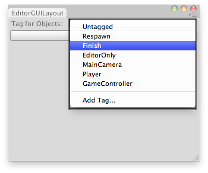

EditorGUILayout.TagField
public static string TagField(string tag,
params GUILayoutOption[] options);
public static string TagField(string label,
string tag,
params GUILayoutOption[] options);
public static string TagField(string label,
string tag,
GUIStyle style,
params GUILayoutOption[] options);
public static string TagField(GUIContent label,
string tag,
GUIStyle style,
params GUILayoutOption[] options);
Parameters
| label | Optional label in front of the field. | |
| tag | The tag the field shows. | |
| style | Optional GUIStyle. | |
| options | An optional list of layout options that specify extra layout properties. Any values passed in here will override settings defined by the style.See Also: GUILayout.Width, GUILayout.Height, GUILayout.MinWidth, GUILayout.MaxWidth, GUILayout.MinHeight, GUILayout.MaxHeight, GUILayout.ExpandWidth, GUILayout.ExpandHeight. |
Returns
string The tag selected by the user.
Description 描述
Make a tag selection field.

Assign tags on the selected GameObjects.
// Simple editor script that lets you set a tag for the selected GameObjects. using UnityEditor; using UnityEngine;
public class EditorGUILayoutTagField : EditorWindow { static string tagStr = "";
[MenuItem("Examples/Set Tags For Selection")] static void Init() { EditorWindow window = GetWindow(typeof(EditorGUILayoutTagField)); window.Show(); }
void OnGUI() { tagStr = EditorGUILayout.TagField("Tag for Objects:", tagStr); if (GUILayout.Button("Set Tag!")) { SetTags(); } }
static void SetTags() { foreach (GameObject go in Selection.gameObjects) { go.tag = tagStr; } } }